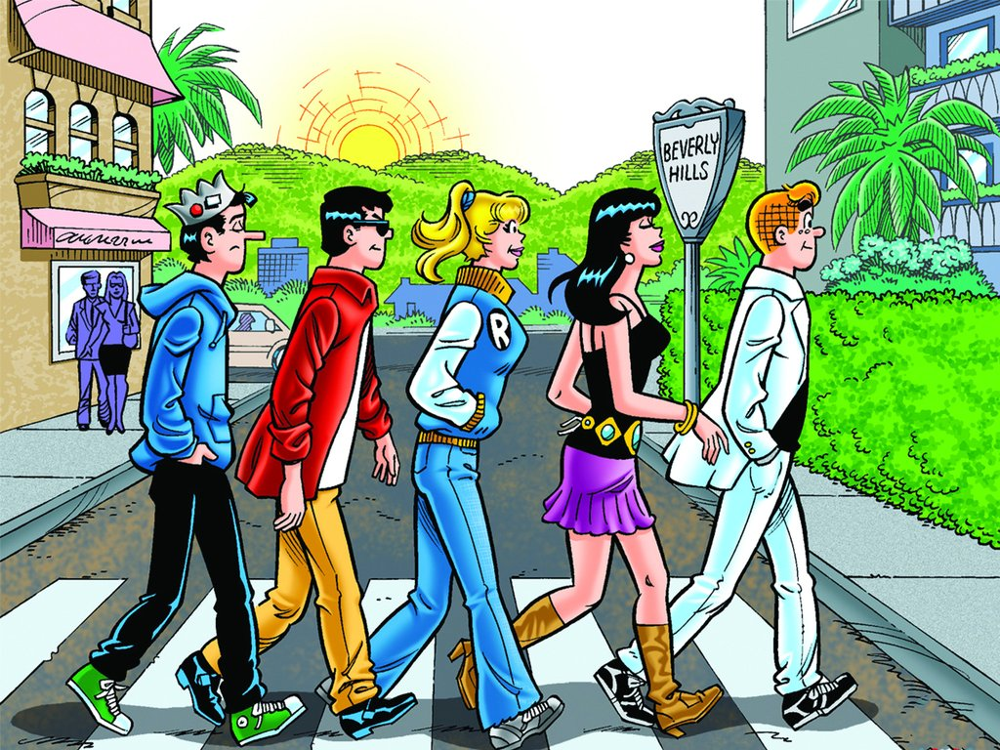

About Arch
Archie is a student at Riverdale High School, a budding musician, and a football player for the Riverdale Bulldogs. His team number was number nine, given to him by Coach Clayton.
He and his friends
Archi's Characteristics
- He's always juggling the two girls, which keeps him in endless trouble!
- He's clean cut, well-mannered, and well-meaning, but is extremely impulsive and easily distracted
- He brings home average grades, and plays on the school sports teams.
Archi's Friends
Archi has four close friends and his girlfriend is Veronica
Click on the links below to read more about his friends